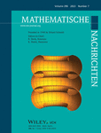

| Author(s) | Title | e-print | Year | To appear on | Related files | |
|
Federico Fallucca Roberto Pignatelli |
Smooth k-double covers of the plane of geometric genus 3 | math/2305.04545 | 2023 | Rend. Mat. Appl. (7) |
| Author(s) | Title | e-print | Issue of the Journal | Related files | Digital Object Identifier | |
| Federico Fallucca |
Examples of surfaces with canonical maps of degree 12, 13, 15, 16 and 18 |
math/2209.06057 | Ann. Mat. Pura Appl. (4), (2023), (online version) | 10.1007/s10231-023-01363-6 | ||
|
Federico Fallucca Roberto Pignatelli |
Some surfaces with canonical map of degree 4 | math/2107.07966 | Portugaliae Math., (2023), (online version) | 10.4171/PM/2106 | ||
|
Federico Fallucca Christian Gleissner |
Some surfaces with canonical maps of degree 10, 11 and 14 | math/2207.02969 | Math. Nachr., (2023), (online version) |  | 10.1002/mana.202200450 |
Here you find an abstract of the thesis: Abstract.
Here you find the thesis: On the degree of the canonical map of surfaces of general type.
We have produced a MAGMA code which gives in input a pair of natural numbers \(K^2\) and \(\chi\) and returns all regular surfaces \(S\) of general type with \(K^2_S=K^2\) and \(\chi(\mathcal O_S)=\chi\), which are Product-Quotient surfaces: https://github.com/Fefe9696/PQ_Surfaces_with_fixed_Ksquare_chi.
Our MAGMA code uses a database of topological types of holomorphic actions of a finite group \(G\) on a compact Riemann surface \(S\) of genus \(g \geq 2\) with \(S/G \cong \mathbb P^1\): TipiTopo.
The MAGMA code to produce the database of topological types of Galois covers of the projective line is available at: gullinbursti.